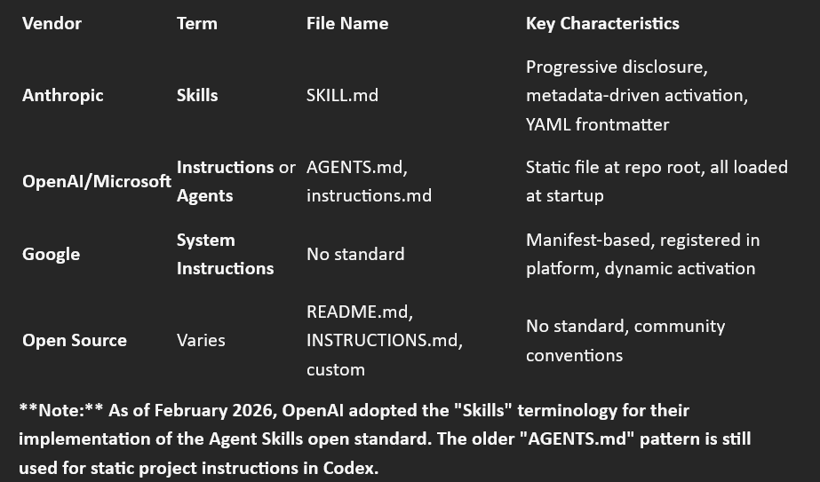
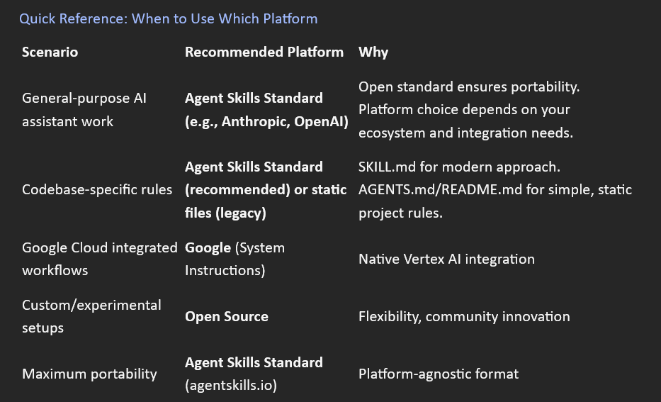

Appendix D: Cross-Platform Implementation & Resources¶
Purpose: Brief guide to Skills across AI platforms with links to official resources
Note: Platforms evolve rapidly—always check official documentation for latest implementation details
Introduction¶
Skills (also called "Instructions.md," "Agents.md", or "System Instructions" depending on platform) are a universal concept in AI system design, but each platform implements them differently.
This appendix provides¶
• Universal principles that apply across all platforms
• Platform-specific implementation notes (brief)
• Terminology landscape (what each vendor calls Skills)
• Conversion guidance (adapting skills between platforms)
• Anthropic resources and repositories
Universal Principles¶
Regardless of platform, effective agent knowledge documents share these characteristics:
1. Progressive Disclosure¶
Principle: Load only what's needed, when it's needed.
Why it matters:
• Reduces cognitive load on the model
• Keeps context focused and relevant
• Enables larger knowledge bases without overload
• Improves performance by avoiding irrelevant information
**How Anthropic implements:** Metadata-driven activation (skills load based on name and description matching user intent)
**How others might implement:** Varies by platform (some load all instructions at startup, others support dynamic loading)
2. Metadata-Driven Discovery¶
Principle: Name and description enable automatic activation.
Why it matters:
• Models can discover and activate appropriate skills
• No manual switching required
• Enables skill composition (multiple skills active)
• Scales to large skill libraries
Universal pattern:
name: skill-identifier
description: What this does and when to use it. Keywords: relevant, terms.
3. Structured Decision Criteria¶
Principle: Use IF-THEN patterns for decision logic.
Why it matters:
• Clear, parseable logic
• Models understand conditional execution
• Reduces ambiguity
• Enables verification
**Universal pattern:**
IF [observable condition]:
→ [Specific action]
→ [Expected outcome]
4. Cognitive Load Management¶
Principle: Don't overload the model's context window.
Why it matters:
• Too much information degrades performance
• Context limits are real constraints
• Focus improves quality
Best practices:
• Main file: 400-500 lines max (Anthropic SKILL.md)
• Extended content in separate reference files
• Progressive disclosure of details
• Clear unload conditions to prevent context bleed
Platform-Specific Implementations¶
Anthropic Claude (Skills)¶
Implementation approach: Progressive disclosure with metadata-driven activation
Claude.ai (Web/Mobile/Desktop)¶
How to use:
1. Navigate to Settings → Capabilities → Skills
2. Upload skill as zip file (directory containing SKILL.md)
3. Skills activate automatically based on user intent
**File structure:**
skill-name/
├── SKILL.md # Required: YAML frontmatter + Markdown
└── references/ # Optional: Supporting files
├── EXAMPLES.md
└── GUIDE.md
Claude API¶
How to use: Pass skills via the skills parameter in API requests
Example:
import anthropic
client = anthropic.Anthropic(api_key="your-api-key")
response = client.messages.create(
model="The model you use",
max_tokens=1024,
skills=[
{
"type": "text",
"text": "---\nname: example-skill\ndescription: Example\n---\n\n# Content"
}
],
messages=[
{"role": "user", "content": "Your prompt"}
]
)
Documentation: https://platform.claude.com/docs/en/agents-and-tools/agent-skills/overview
Claude Code¶
How to use: Install skills from the marketplace or create custom skills
Marketplace: Browse and install community-created skills
Custom skills: Place in ~/.claude/skills/ directory
Documentation: See Claude Code marketplace in terminal
Claude Desktop¶
How to use: Skills work with Cowork's autonomous task execution.
**Note:** Cowork is in develpoment (as of February 2026). Skills integration capabilities are evolving.
**Status:** Check official documentation for latest Cowork + Skills support
Documentation: https://support.claude.com (search "Cowork")
OpenAI (Skills via Responses API)¶
Implementation approach: Progressive disclosure with API-based skill management
Status: OpenAI adopted the Agent Skills open standard (February 2026)
How to use:
1. Upload skill via API (multipart or zip)
2. Attach to hosted or local shell environment
3. Skills activate based on metadata in system prompt
Upload methods:
Directory upload (multipart):
bash
curl -X POST '<https://api.openai.com/v1/skills>' \
-H "Authorization: Bearer $OPENAI_API_KEY" \
-F 'files[]=@./skill-name/SKILL.md;filename=skill-name/SKILL.md;type=text/markdown' \
-F 'files[]=@./skill-name/script.py;filename=skill-name/script.py;type=text/plain'
Zip upload:
bash
curl -X POST '<https://api.openai.com/v1/skills>' \
-H "Authorization: Bearer $OPENAI_API_KEY" \
-F 'files=@./skill-name.zip;type=application/zip'
**File structure:**
skill-name/
├── SKILL.md # Required: YAML frontmatter + Markdown
├── references/ # Optional: Supporting files
│ ├── EXAMPLES.md
│ └── GUIDE.md
└── scripts/ # Optional: Verification scripts
└── verify.sh
Usage in Responses API:
python
from openai import OpenAI
client = OpenAI()
response = client.responses.create(
model="gpt-5.2",
tools=[
{
"type": "shell",
"environment": {
"type": "container_auto", # or "local"
"skills": [
{"type": "skill_reference", "skill_id": "<skill_id>"},
{"type": "skill_reference", "skill_id": "<skill_id>", "version": 2}
]
}
}
],
input="Your prompt here"
)
Characteristics:
- Compatible with Agent Skills open standard
- SKILL.md with YAML frontmatter required
- Progressive disclosure via system prompt injection
- Metadata (name, description, path) loaded automatically
- Full SKILL.md loaded when skill is invoked
- Explicit versioning API (create, update, delete versions)
- Supports hosted (container) and local shell modes
- Curated first-party skills available (e.g., "openai-spreadsheets")
- Inline skills supported (base64 zip in request)
Limits:
- Max zip upload: 50 MB
- Max files per skill version: 500
- Max uncompressed file size: 25 MB
- Cannot use with Zero Data Retention enabled (hosted mode)
When to use:
- For OpenAI Responses API with shell tool
- When you need versioned skill management
- For hosted or local execution environments
Note on AGENTS.md: OpenAI previously used AGENTS.md files (static instructions loaded at startup) for Codex and other tools. This approach is still valid for project-specific coding standards but is separate from the Skills standard. The Skills implementation described above is the newer, standardized approach that supports progressive disclosure and aligns with agentskills.io.
Google (System Instructions & Function Calling)¶
Two paths for implementing Skills (Google: System Instructions + Tools) are provided. Use the Decision Tree to determine which path fits your deployment scale.
| Criterion | AI Studio (UI) | Vertex AI (API) |
|---|---|---|
| Best for | Prototyping, Testing, 1-3 skills | Production, 5+ skills |
| Setup complexity | Low (visual interface) | Medium (Python SDK) |
| Cost optimization | Basic | Advanced (Context caching) |
| Architecture | Manual Tool registration | Programmatic Tool Objects |
Path 1: Via Google AI Studio (UI)¶
When to use:
-You are in the discovery phase or testing individual skill logic.
-You want to test the interaction between System Instructions and Tools without writing boilerplate code.
-You are managing a small set (1-3) of skills.
1. Extract Manifest: Convert your SKILL.md metadata (YAML) into the "System Instructions" block.
2. Set System Instructions: Paste the "How-to" logic into the System Instructions field at the
top of the interface.
3. Register Tools (Function Calling): Click Add Tool → Function Calling.
4. Define the function name, description, and parameters (JSON Schema) based on the
"Execution" section of your skill.
5. Test Intent Routing: Use the chat window to verify the model correctly triggers
the tool based on your instructions.
Path 2: Via Vertex AI Function Calling API (Python)¶
When to use:
- You are deploying to a production environment.
- You are managing 5+ skills (leveraging Context Caching for 90% cost savings).
- You require Vertex AI Agent Runtime for advanced orchestration.
1. Initialize the Vertex AI SDK: Use the GenerativeModel class to bridge your instructions and tools.
2. Register Execution as a Tool:In Google's SDK, functions are wrapped in a Tool object.
Python
from vertexai.generative_models import FunctionDeclaration, Tool, GenerativeModel
# 1. Define the skill's execution interface (The "Doing")
optimize_sql_declaration = FunctionDeclaration(
name="optimize_sql_query",
description="Optimizes slow SQL queries by analyzing execution plans.",
parameters={
"type": "object",
"properties": {
"query": {"type": "string", "description": "The raw SQL string"},
"db_type": {"type": "string", "enum": ["postgres", "bigquery"]}
},
"required": ["query"]
}
)
# 2. Bundle declarations into a Tool object
sql_tool = Tool(function_declarations=[optimize_sql_declaration])
# 3. Initialize Model with System Instructions (The "How-to")
model = GenerativeModel(
model_name="gemini-1.5-pro",
system_instruction=["You are a Senior DBA. Use the optimize_sql_query tool for any performance requests."],
tools=[sql_tool]
)
Implement Context Caching (Cost Optimization):For large skill libraries,
cache the system instructions and tool definitions.
Note: This is most effective for contexts exceeding 32k tokens.Pythonfrom vertexai.preview import caching
cached_content = caching.CachedContent.create(
model_name="gemini-1.5-pro",
system_instruction=combined_skill_instructions, # Your 5+ skills
ttl=3600 # 1 hour
)
# Use the cache in your model
model = GenerativeModel(model_name="gemini-1.5-pro")
response = model.generate_content("User prompt", cached_content=cached_content.name)
Architecture Pattern¶
The "Split" Model
Google separates the Persona from the Capability.
Anthropic: Skills are "Self-Contained" (Instructions + Tools together).
Google: Skills are "Split" (Instructions go to System Instructions, Execution goes to Tools).PlaintextAnthropic SKILL.md
├── YAML Frontmatter → Google: Metadata + Intent Routing
├── Instructions → Google: System Instructions (The "Brain")
└── Execution Logic → Google: Tools/Function Declarations (The "Hands")
Progressive Disclosure & Agent Runtime
While standard System Instructions load everything at startup, Vertex AI Agent Runtime allows
for Progressive Disclosure:
1. Discovery Layer: The agent is only aware of the metadata (names and descriptions) of your skill library.
2. Just-in-Time Loading: The Runtime only pulls the full "System Instructions" for a specific skill
once the model determines that skill is needed for the task.
Benefit: This prevents "context stuffing," reduces costs, and improves reasoning accuracy for libraries
with 50+ skills.
-
Vertex AI System Instructions: https://docs.cloud.google.com/vertex-ai/generative-ai/docs/learn/prompts/system-instructions
-
Vertex AI Agent Engine (Runtime): https://docs.cloud.google.com/agent-builder/agent-engine/overview https://cloud.google.com/vertex-ai/docs/generative-ai/agent-runtime
-
Vertex AI Agent Builder (The broader suite): https://cloud.google.com/products/agent-builder
-
Multimodal Function Calling: https://cloud.google.com/vertex-ai/docs/generative-ai/multimodal/function-calling
Pro Tip:¶
When migrating from Anthropic, remember that the "Instructions" are the model's internal guide, while the "Tools" are its external interface. If your skill feels "slow," check if your System Instructions are too verbose-consider moving some of that logic into the tool's parameter descriptions!
Open Source Implementations¶
Implementation approach: Varies widely (no standard)
Always check documentation
Common Patterns¶
Files used:
• README.md (instructions in project readme)
• INSTRUCTIONS.md (dedicated instruction file)
• .ai/ directory (custom conventions)
• Custom filenames (project-specific)
Formats:
• Markdown (most common)
• Plain text
• JSON/YAML
• Platform-specific formats
Characteristics:
• No standard (each framework different)
• Often simpler than enterprise platforms
• Community-driven conventions
• Evolving rapidly
Documentation: Check specific framework documentation (LangChain, AutoGPT, etc.)
The Terminology Landscape¶
Different vendors use different terms for the same concept:

Universal concept: Providing specialized knowledge to AI agents Platform-specific: How that knowledge is structured, loaded, and activated
Converting Skills Between Platforms¶
From Anthropic SKILL.md → OpenAI Skills¶
Good news: OpenAI now supports the Agent Skills open standard, so skills are largely compatible!
Steps:
1. **No changes needed to file structure:**
- Keep YAML frontmatter (OpenAI requires it)
- Keep Markdown body (same format)
- Keep references/ and scripts/ directories if present
2. Upload to OpenAI via API:
- Zip your skill directory
zip -r skill-name.zip skill-name/
- Upload to OpenAI
curl -X POST '<https://api.openai.com/v1/skills>' \
-H "Authorization: Bearer $OPENAI_API_KEY" \
-F 'files=@./skill-name.zip;type=application/zip'
3. Attach to shell environment in Responses API:
python
response = client.responses.create(
model="gpt-5.2",
tools=[{
"type": "shell",
"environment": {
"type": "container_auto",
"skills": [{"type": "skill_reference", "skill_id": "<skill_id>"}]
}
}],
input="Your prompt"
)
```
#### Compatibility notes:
```text
- ✅ YAML frontmatter: Compatible (OpenAI requires it)
- ✅ Semantic tags: Compatible (work in Markdown body)
- ✅ Progressive disclosure: Both platforms support it
- ✅ Multi-file structure: Compatible (references/, scripts/)
- ⚠️ Activation mechanism: Slightly different
(Anthropic auto-activates, OpenAI requires explicit shell tool attachment)
- ⚠️ Platform-specific features: Some Anthropic-specific patterns may need testing
What you gain:
What you lose:
- Anthropic's web interface upload (must use API)
- Direct activation in chat (requires shell tool attachment)
Legacy: Anthropic SKILL.md → OpenAI AGENTS.md (Static Instructions)¶
If you need to convert to OpenAI's older AGENTS.md format (for Codex project-specific rules):
**Steps:**
1. Remove YAML frontmatter
2. Keep Markdown body
3. Remove semantic tags (optional, but they may not be recognized)
4. Place in project root as AGENTS.md
**Trade-off:** Lose progressive disclosure, but gain static project-wide instructions.
5. Add semantic tags (optional but recommended)
Wrap decision logic in `<decision_criteria>`
Add `<critical>` for must-follow rules
Include `<unload_condition>` for when to stop
6. Place in skills directory (or zip for upload)
From Anthropic SKILL.md → Google Vertex AI (Detailed)¶
The Split-Model Approach:
Google separates a skill into two distinct components to optimize for cloud scale and security:
System Instructions: The "Brain" (decision logic, persona, and constraints).
Tools/Functions: The "Hands" (executable capabilities and API interfaces).
Step-by-step conversion:¶
1. Extract and Standardize Manifest
Google uses the metadata from your SKILL.md frontmatter to drive its Intent Routing engine.
YAML
# From your SKILL.md frontmatter
---
name: sql-query-optimization
description: >
Optimize slow SQL queries for PostgreSQL and MySQL.
Use when query execution time exceeds 1 second.
Keywords: database, performance, query optimization
scope: postgresql, mysql
---
**Google Mapping:**
name → Function/Tool Identifier: Used in code to trigger the execution.
description → Intent Routing: This is the most critical field.
Google uses this text to decide when to activate a specific tool.
scope → Context Boundaries: Should be included in the System Instructions
to limit the model's "domain of authority."
2. Convert Instructions to System Instructions
Move your "How-to" logic from the SKILL.md body into Google’s System Instruction block.
Gemini models perform best when logic is organized using Markdown headers and clear If/Then patterns.
To System Instruction (plain text/markdown):
Markdown
# SQL Query Optimization Logic
When a query execution time exceeds 1 second:
1. Run EXPLAIN ANALYZE to retrieve the execution plan.
2. Identify bottlenecks: Look specifically for Sequential Scans, Nested Loops, or Missing Indexes.
3. Apply targeted optimization based on the identified bottleneck type.
4. Verify improvement with a follow-up EXPLAIN ANALYZE.
## Best Practice Patterns:
- Always measure a baseline before applying optimizations.
- Focus on the specific bottleneck; do not add redundant indexes.
- Check for performance regressions in related queries after changes.
3. Register Execution as Tool/Function
If your skill performs an action (like running an actual SQL command), you must register it as a Tool.
Via Google AI Studio (UI):¶
Navigate to the Tools section.
Select Add Function.
Map your skill's "Execution" parameters to the JSON Schema fields provided in the UI.
Via Vertex AI SDK (Python - 2026 Standard):
Python
from google import genai
from google.genai import types
# Define the Tool (The "Doing")
optimize_func = types.FunctionDeclaration(
name="optimize_sql_query",
description="Optimizes slow SQL queries by analyzing execution plans.",
parameters={
"type": "object",
"properties": {
"query": {"type": "string", "description": "The SQL query string"},
"db_type": {"type": "string", "enum": ["postgresql", "mysql"]}
},
"required": ["query", "db_type"]
}
)
sql_tool = types.Tool(function_declarations=[optimize_func])
4. Implement Context Caching (for 5+ Skills)
For large skill libraries, Google allows you to cache your System Instructions and Tool definitions.
This is a major cost-saver for production environments.
Note: Context Caching typically requires a minimum of 32,768 tokens to be active.
For smaller skill sets, the standard GenerateContent call is sufficient.
Python
# Cache your library of 5+ skills to reduce latency and costs
skill_cache = client.caches.create(
model="gemini-1.5-pro-002",
config=types.CreateCachedContentConfig(
system_instruction=combined_skill_instructions,
ttl_seconds=3600 # Minimum 1 hour
)
)
# Use the cached skills in a request
response = client.models.generate_content(
model="gemini-1.5-pro-002",
contents="Optimize: SELECT * FROM users WHERE age > 30",
config=types.GenerateContentConfig(cached_content=skill_cache.name)
)
5. Test Intent Routing
Because Google uses the description field to activate tools,
you must verify that user prompts trigger the correct "Skill."
Test Case 1: "My database is crawling" → should activate sql-query-optimization.
Test Case 2: "Format this SQL" → should not activate optimization (remains in general chat).
Enterprise Scale: Context Caching reduces costs significantly for massive skill sets.
Enhanced Security: Execution logic is kept in your backend; the LLM only sees the tool "interface."
Native Integration: Direct access to Google Cloud/Vertex AI ecosystem features.
Trade-offs:
Increased Complexity: You must manage the "Split" between instructions and tool code.
No Native Progressive Disclosure: By default, all system instructions are loaded at once.
Workaround: Use Dynamic Tool Routing to provide only relevant tools based on conversation state.
State Management: Developers must manually pass tool outputs back to the model to maintain the "Skill" loop.
When to use Google approach:
You are already operating within the Google Cloud ecosystem.
You need Function Calling for real-time system execution.
You are managing a large library (50+) of complex, versioned skills.
Universal Conversion Tips¶
When converting between platforms:
1. Preserve core logic: Decision criteria, patterns, examples translate across platforms
2. Adapt metadata: Each platform has different frontmatter/config requirements
3. Consider activation: Some platforms auto-activate (Anthropic), others load all at once (OpenAI)
4. Test thoroughly: Platform differences can affect behavior
5. Document origin: Note if skill was converted (aids future updates)
Anthropic Resources¶
Official Repositories¶
- Anthropic Skills Repository URL: https://github.com/anthropics/skills
What it contains:
• Anthropic's official implementation of Skills for Claude
• Example skills demonstrating best practices
• Reference implementations
When to use:
• Study well-crafted skill examples
• Understand Anthropic's approach to skill design
• Find inspiration for your own skills
```
**Note:** For information about the Agent Skills open standard, see agentskills.io
2. Skill Creator Skill
URL: <https://github.com/anthropics/skills/tree/main/skills/skill-creator>
**What it contains:**
• A skill that helps create other skills!
• Automated best practice checking
• Guidance on effective skill design
**When to use:**
• Creating a new skill from scratch
• Updating an existing skill
• Want automated validation of skill quality
• Need guidance on skill structure
**How it works:** Activate the skill-creator skill, describe what you want your skill to do,
and it guides you through creation with best practices built in.
### Official Documentation
1. Claude Support: Skills Guide
URL: <https://support.claude.com/en/articles/12580051-teach-claude-your-way-of-working-using-skills>
**What it covers:**
```text
• How to create skills
• How to upload skills to Claude.ai
• Best practices for skill design
• Troubleshooting common issues
**Audience:** All users (beginner to advanced)
What it covers:
• The vision behind Agent Skills
• Why skills matter for AI agents
• Real-world use cases
• The open standard approach
**Audience:** Anyone interested in the "why" behind Skills
What it covers:
• Using skills via the Claude API
• Skills parameter format
• API examples with skills
• Integration patterns
**Audience:** Developers integrating Claude API
Agent Skills Open Standard¶
Specification Website URL: https://agentskills.io/specification
What it contains:
• Complete open standard specification
• Platform-agnostic skill format
• Technical specification details
• Governance and contribution guidelines
Why it matters:
• Skills are not proprietary to Anthropic
• Other platforms can adopt the standard
• Enables skill portability across AI platforms
• Community-driven evolution
When to reference: For precise technical details about the skill specification format.
Platform Evolution Note¶
Important reminder: AI platforms are evolving rapidly, especially around agent capabilities and knowledge integration.
Recent Development (February 2026):¶
OpenAI adopted the Agent Skills open standard, implementing:
- SKILL.md with YAML frontmatter
- Progressive disclosure via system prompt injection
- Metadata-driven activation (name/description/path)
- Versioned skill management via API
- Multi-file skill support (references/, scripts/)
This demonstrates the momentum behind the open standard and validates the portability of skills built following these principles.
What this means for Skills:
Anthropic's Influence- The ease-of-use and effectiveness of Anthropic's Skills implementation is likely
to influence how other platforms approach this concept.
Features like:
• Progressive disclosure
• Metadata-driven activation
• Structured semantic tags
• User Intent Change detection
...may appear in other platforms' implementations over time.
Checking for Updates**¶
Always consult official documentation:
• Anthropic: https://docs.claude.com https://support.claude.com
• OpenAI: https://platform.openai.com/docs
• Google: https://cloud.google.com/vertex-ai/docs
• Open Source: Check specific framework documentation
What to watch for:
• New skill formats or standards
• Changes to activation mechanisms
• Enhanced metadata fields
• Progressive disclosure support in other platforms
• Interoperability improvements
This Curriculum's Approach¶
This curriculum teaches Anthropic's implementation in depth because:
- It's the most mature and well-documented
- It's based on an open standard (agentskills.io)
- The principles transfer to other platforms
- It represents best practices for agent knowledge design
Adapting to other platforms: Use the principles and patterns taught here, then adjust metadata and structure to match your target platform's requirements.
Quick Reference: When to Use Which Platform¶

Summary¶
Key takeaways¶
- Skills are universal: The concept applies across platforms, implementations vary
- Anthropic leads: Most mature implementation with open standard
- Principles transfer: Progressive disclosure, metadata-driven activation, structured logic work everywhere
- Platforms evolve: Check official docs for latest implementation details
- Conversion is possible: Skills can be adapted between platforms with some effort
- Open standard exists: agentskills.io provides platform-agnostic specification
For this curriculum: We teach Anthropic's approach in depth, knowing the principles apply broadly and the implementation is likely to influence the field.
Your next steps¶
- Master Skills using Anthropic's implementation (Sections 1.1-1.6)
- Apply principles to your platform of choice
- Contribute to the open standard evolution
- Share your skills with the community
Resources at a glance¶
GitHub¶
• Anthropic Skills Repo: https://github.com/anthropics/skills
• Skill Creator: https://github.com/anthropics/skills/tree/main/skills/skill-creator
Documentation¶
• Skills Guide: https://support.claude.com/en/articles/12580051
• Blog Post: https://claude.com/blog/equipping-agents-for-the-real-world-with-agent-skills
• API Docs: https://platform.claude.com/docs/en/agents-and-tools/agent-skills/overview
Open Standard¶
• Open Specification: https://agentskills.io/specification
END OF APPENDIX C
Document Version: 1.0.0 Last Updated: 2026-02-10 Note:Platforms evolve rapidly—verify current implementation details in official documentation Key Principle:Skills concepts are universal; implementations are platform-specific